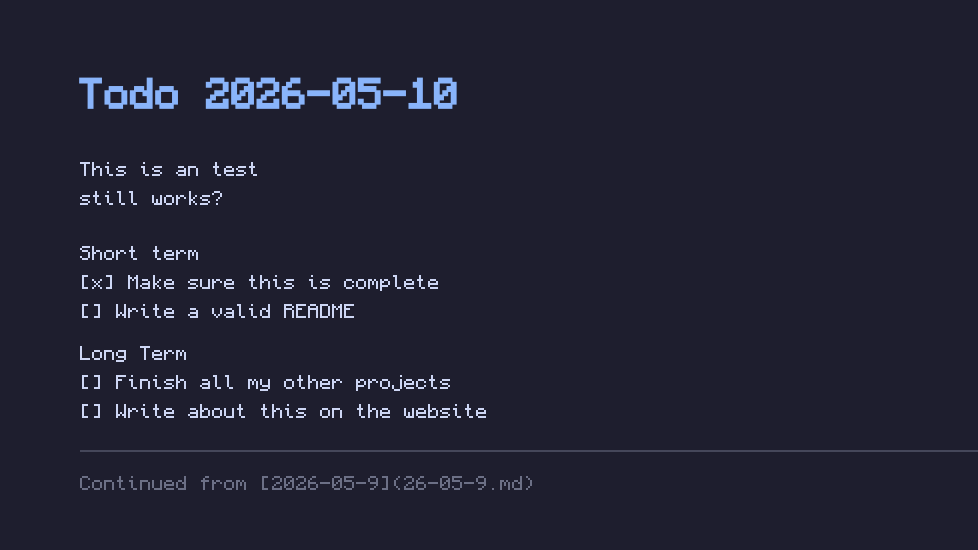
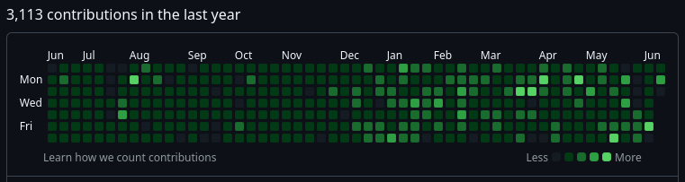

About
My name is Miro. I am currently studying for my masters in IT at the University of Uppsala. I also do stuff like my projects described on the projects page, but when I'm not doing that I am working with and integrating vending machines for Impact Solution.
Skills
My main interest in IT is in systems architecture and integration between said systems. In other words, making all the small cogs work together in a machine or system. This often renders fun challenges like reading legacy code and integrating half broken software that presents the added challenge of adapting. The satisfying part thus comes from building a working system regardless of what the underlying components look like.
In terms of language proficiency and experience I'm a quick learner but have the most experience in TypeScript/JavaScript, Python, and C. I know both SQL and noSQL databases and have a large understanding and proficiency in integrating and creating API's along with server and networking creation.
- TypeScript / JavaScript
- Python
- C
- SQL & noSQL
- API integration
- Systems architecture

Ink
A daily todo script that opens a dated markdown file in your terminal editor and renders it as your GNOME wallpaper on save. Used as a daily todo list and reminder that work is never done. Written in bash with a Python stdlib renderer.

YAGF
Yet-Another-Github-Filler is an automated script designed to artificially increase the amount of commits done, boosting the user's GitHub front page contribution graph. Written as a simple bash script using git and the gh CLI to produce pull requests and comments.